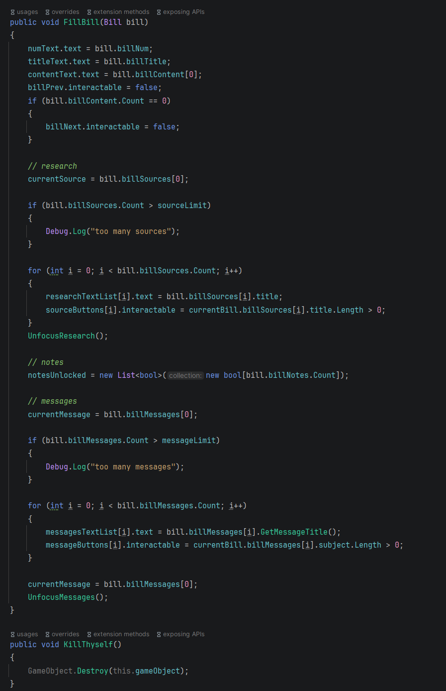
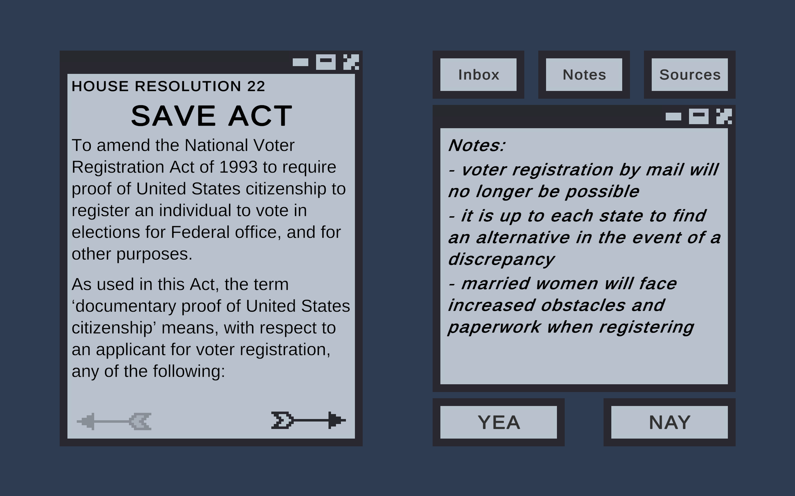
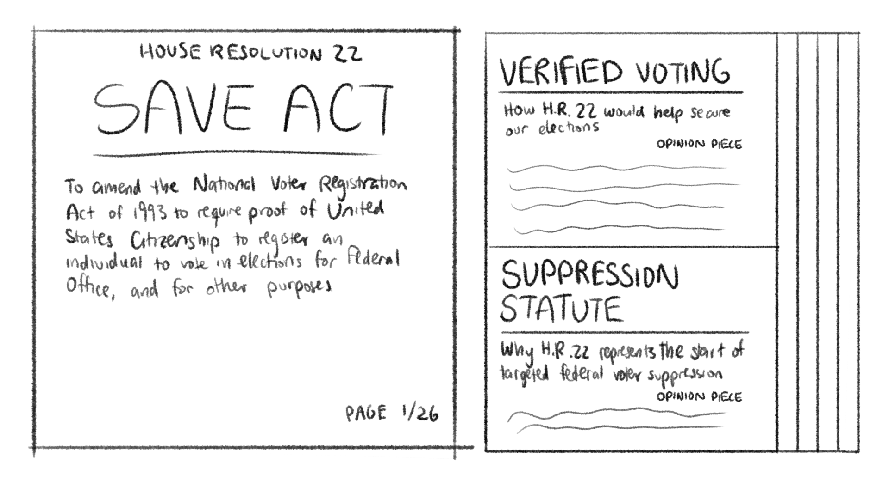
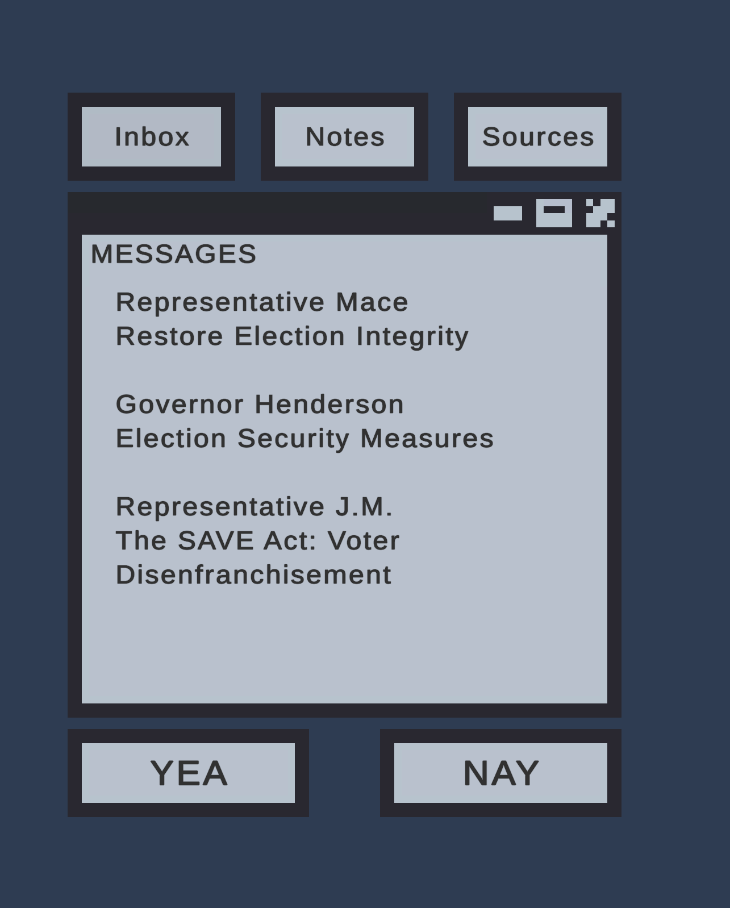
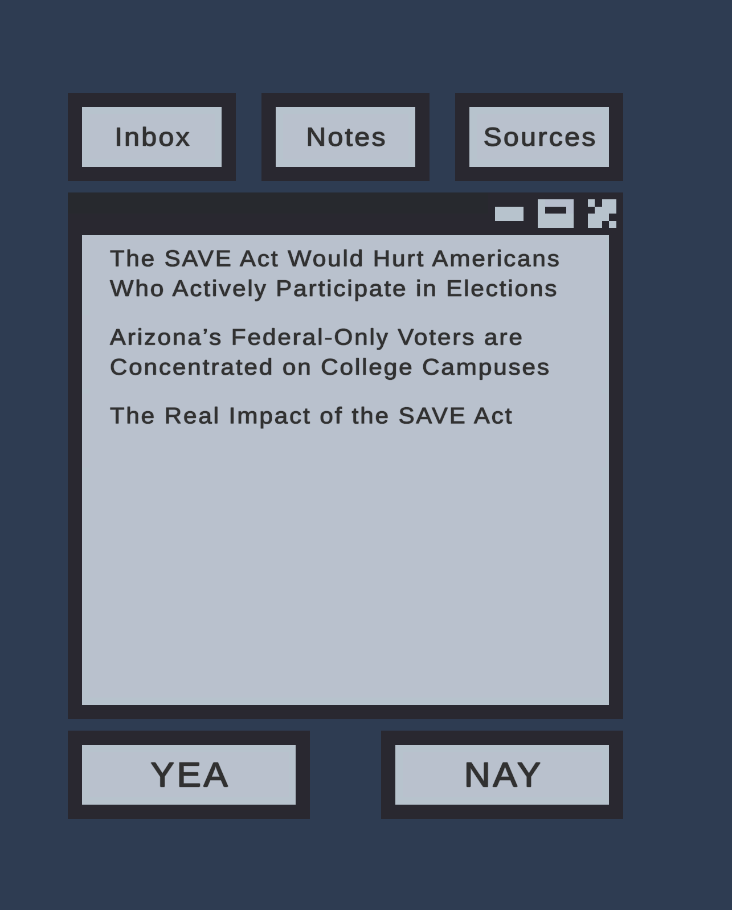
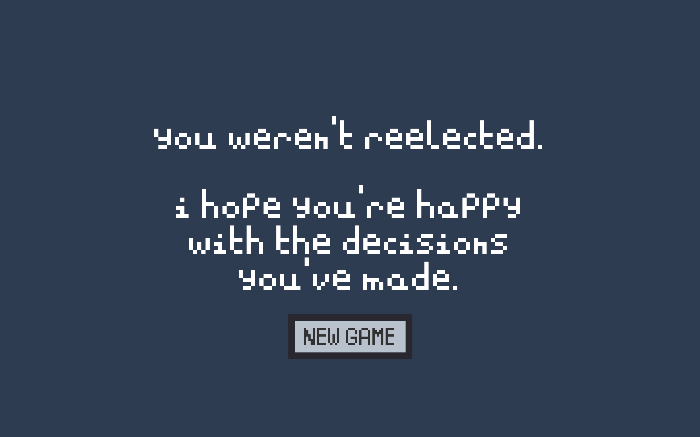

Read opinion pieces, messages from fellow lawmakers, and take notes as you decide the fate of legislation!

Read opinion pieces, messages from fellow lawmakers, and take notes as you decide the fate of legislation!
I developed this game for the Keystone project for the University of Maryland Honors Humanities program. My goal was to combine my love for game development
with my desire to raise awareness and provide commentary about a topic I was passionate about. I drew inspiration from games like Papers, Please for its drag-and-click
gameplay and ability to produce empathy within the player through storytelling, dialogue, and relatively simple visuals. The gameplay I ended up completing describes the SAVE Act,
a resolution that aims to impede and make it more difficult for Americans to vote in elections, and which is actually on the Senate floor as of May 2026. I hope that this interactive
experience could be successful in being both educational and enjoyable.
I researched, designed, and built this game over the Spring 2025 semester as my first narrative-based, UI-focused project.
link to itch.io page
link to final presentation





